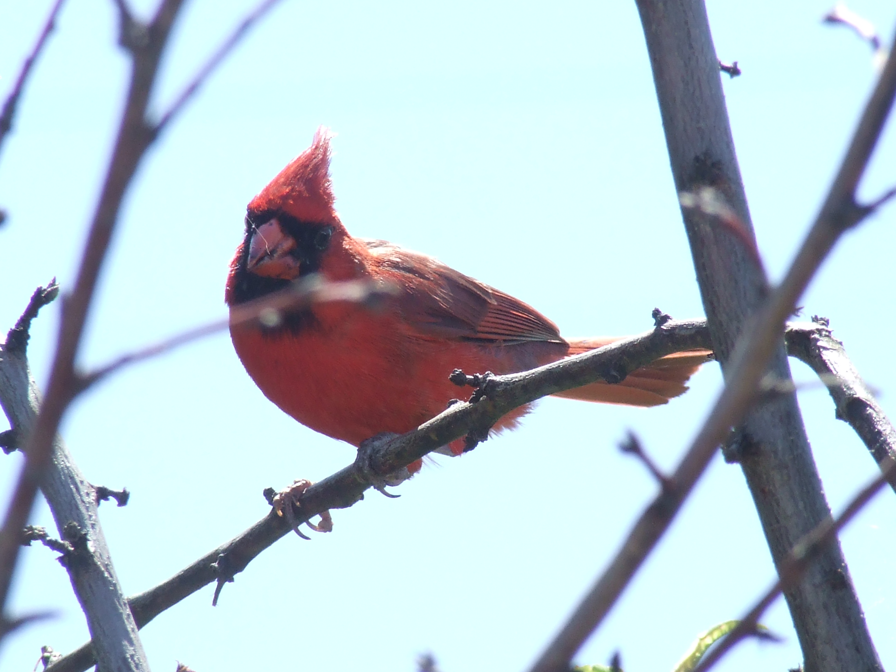
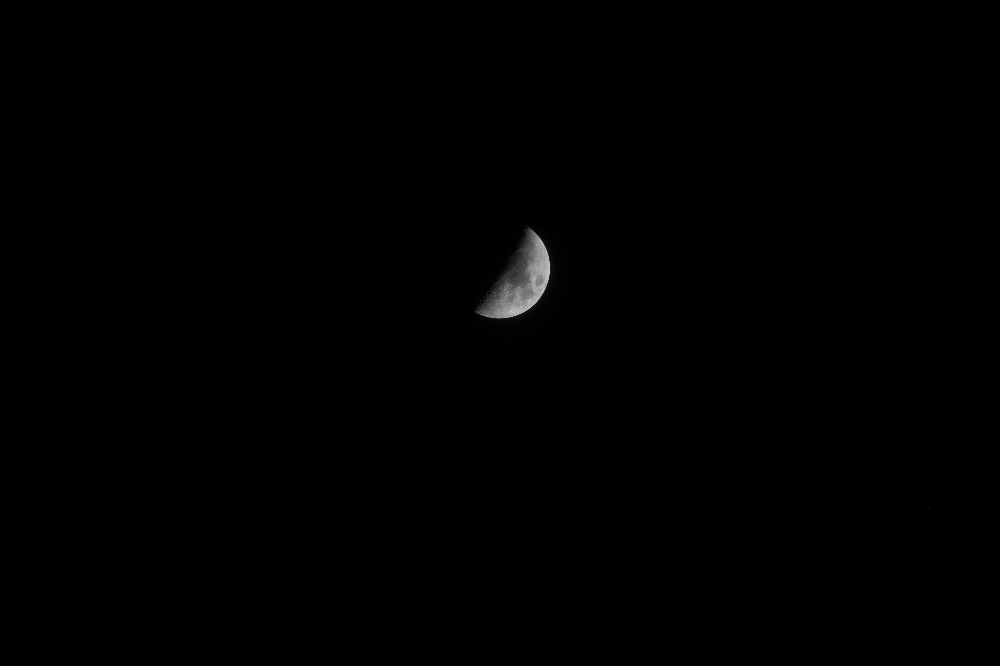
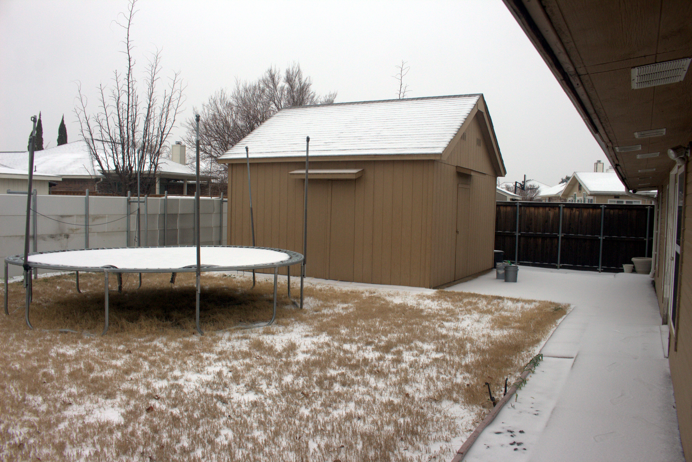
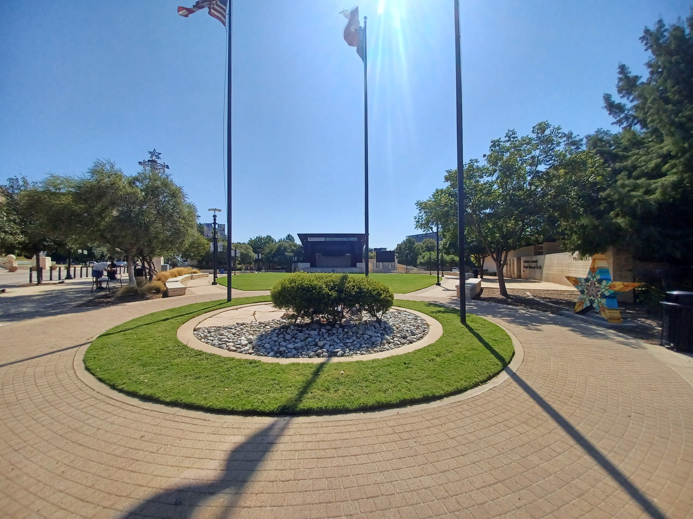
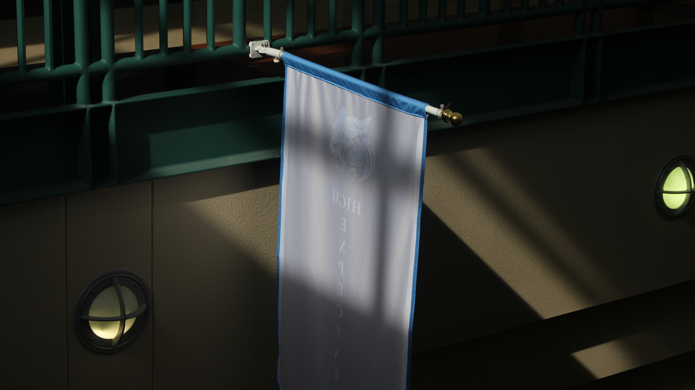
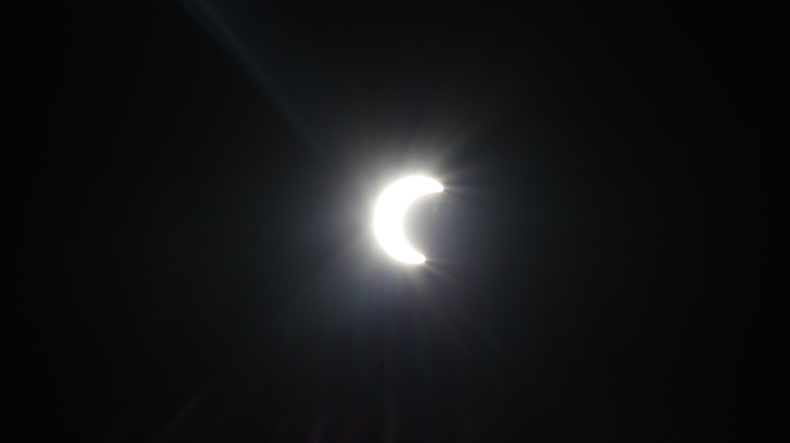
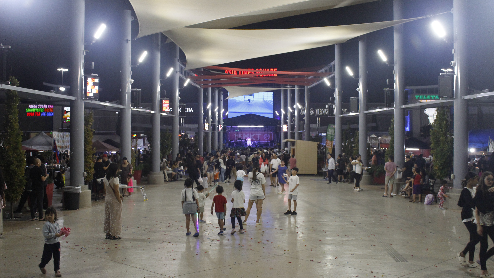

I took this photo with my Canon T5i with a zoomer lens. The moon in real life isn't orange, it's yellow. The setting I changed somehow made it look orange.

Red Bird (25 May 2022)
I found this bird out of nowhere. I took my Fujifilm camera out to shoot pictures of planes and I found the bird by accident.

Half Moon (31 October 2022)
Again, I used the Canon T5i with a zoomer lens. I took this on Halloween! I celebrate the holiday once in a blue moon, but this moon is a cresent.
Airplane in red-orange sky (04 November 2022)
A cool photo I took one day, I made this my wallpaper a couple of times.
Airplane in purple-magenta sky (04 November 2022)
I took this photo on the same day. I used the normal lens to take it. I also made this my wallpaper a couple times.
Rainbow at the edge of horizon (07 November 2022)
It rained the day before but I didn't get to take a photo of the rainbow. It rained again on this day and I saw the rainbow, I took quick photo here and I am happy with the result.
Random airplane in the sky (29 November 2022)
I take a lot of photos of planes, most from the sky. I don't go to the airport often, but there is a small airport near me. I see a lot of planes fly by and I just happen to find this.
Tree outside my home in fall (01 December 2022)
The title explains it for itself, it was fall season and trees tend to have colored leaves. I took this photo with the Sony DSC-H70 and it turned out great.
Mom standing and looking at Christmas tree (13 December 2022)
Yes, we celebrate Christmas. We made the tree early this time. I took this photo when I was eating and I just found a perfect opportunity for a good shot.
My cousins' cat (27 December 2022)
I went to my counsins' house to watch a movie with them. They have a cat named Boots, I took this picture because I like cats.
I missed you so much ❤️ (10 January 2023)
I saw this on the whiteboard in Spanish class when we went back to school after the Christmas break. I wonder who put it there, seems wholesome...
Asia Time Square, Lunar New Year 2023 (14 January 2023)
I took photo this as ATS, an Asian Market located in Grand Prarie, Texas. I took this photo because there was fog inside the building, I think the food stands have something to do with it.

Snow in my backyard (31 January 2023)
This was when there was a snowstorm that happened for a few days. I took the photo when it was still snowing and I got some particles on me at that time. The snow melted quickly days later.
Cherry Blossom tree on my aunt's house (16 March 2023)
My house and my aunt's house are close together, we are diagonal next door neighbors. All I have to do is walk over from my house to my aunt's house. I took this photo because of the Japanese asthetic hehe.

UTA College Park Center (9 September 2023)
I took this photo on my way to get Ritas Ice Cream. I went there for a 9 mile 40-ish minute ebike ride. It was tough getting there but I made it, and after getting ice cream I circle around the UTA center and took this image.

Random flag in my highschool (12 September 2023)
I took this photo in highschool for a photography class to show exposure settings. The flag says "high expectations" btw.
Night time "day" photo (28 September 2023)
I took this photo at 10PM at night. The reason it looks like day is because I changed the exposure settings from the shutter speed to the slowest, aperature to let in more light, and high iso. I used a tripod since my hands are not steady. I didn't know my camera could do this.

2023 Annular Solar Eclipse (14 October 2023)
This is a once in a lifetime moment. I saw this being talked alot in the news since it doesn't happen often. In real life, you don't see the moon blocking the sun, I had to use my Canon T5i with the zoomer lens to see it.

Hong Kong Festival at Asia Time Square (21 October 2023)
This was my 2nd time riding my electric bicycle to ATS. Since I went to the place at night, I had to set up super bright head light to get car drivers' attention. The festival was okay, I even saw my old crush there.